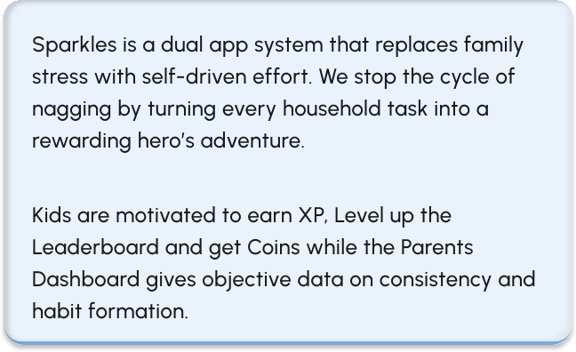

Sparkles Gamified Chores Platform
Transforming household responsibilities into exciting adventures that kids love to complete


Overview
Role- Collaboration
UI/UX Designer, UX Researcher
Tools
Figma, FigJam, Miro, Maze — High Fidelity, Prototype
Timeline
Jan–May 2022
Status
High Fidelity Prototype
Deliverables
User Flow, Wireframes, UX Research, High Fidelity Prototypes, Interaction Design
Summary
This is a gamified chore management app designed to bridge the gap between parent supervision and children's natural desire for achievement and reward. Rather than relying on manual enforcement or paper-based chore listings, it uses a digital point system powered by chores to incentivise kids to complete household tasks, paired with a fully customisable reward system.
The product was designed for real-world parents and children who are ambitious and love learning through play. It was built around three core principles: gamification, smart management, and a fully customisable reward experience.

Highlights


Challenges
Spotlighting issues


Solutions


Research Summary
We conducted research with families to understand how existing chore tools were being used and where they were falling short. Parents reported frustration with inconsistent compliance, while children described chores as boring or unfair. These insights shaped the entire product direction.
Brainstorming

Wireframing

Key Features


Style Guide


Visual Designs

Custom Illustrations
Rewards

Parents Avatar


Reflections

This project taught me that designing for children is designing for honesty. They will immediately ignore anything that does not genuinely excite them and that pressure made me more intentional as a designer. I stopped asking 'does this work?' and started asking 'does this feel worth it?' That single shift in perspective now sits at the centre of everything I design.
This project also tested my discipline. Working against a tight deadline pushed me to make decisive design choices quickly, trust my instincts, and prioritise what truly mattered for the user experience. Looking back, the constraint was as valuable as the creative process itself.